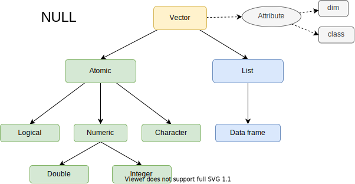

1 Vector
1.1 Overview
1.2 Atomic Vectors
- logical
- numeric: integer, double
- character
1.2.1 Scalar
lgl_var <- c(TRUE, FALSE)
int_var <- c(1L, 6L, 10L)
dbl_var <- c(1, 2.5, 4.5)
chr_var <- c("these are", "some strings")typeof(lgl_var)
#> [1] "logical"
typeof(int_var)
#> [1] "integer"
typeof(dbl_var)
#> [1] "double"
typeof(chr_var)
#> [1] "character"1.2.2 Longer Vector
c() will flattens
c(c(1, 2), c(3, 4))
#> [1] 1 2 3 41.2.3 Missing Value
NA will propagate except
NA ^ 0
#> [1] 1
NA | TRUE
#> [1] TRUE
NA & FALSE
#> [1] FALSEChecking NA
Don’t use this to check NA
x <- c(NA, 5)
x == NA
#> [1] NA NAUse this to check NA
is.na(x)
#> [1] TRUE FALSETypes of NA
typeof(NA_integer_)
#> [1] "integer"
typeof(NA_real_)
#> [1] "double"
typeof(NA_character_)
#> [1] "character"This distinction is usually unimportant because NA will be automatically coerced to the correct type when needed.
1.2.4 Testing
Avoid is.vector(), is.atomic(), and is.numeric(): they don’t test if you have a vector, atomic vector, or numeric vector; you’ll need to carefully read the documentation to figure out what they actually do.
Use this.
is.logical(T)
#> [1] TRUE
is.integer(1L)
#> [1] TRUE
is.double(2)
#> [1] TRUE
is.character("Hi")
#> [1] TRUE1.2.5 Coercion
Combining different types of atomic vector they will be coerced in this order
str(c(F, 1))
#> num [1:2] 0 1
str(c(1, "a"))
#> chr [1:2] "1" "a"Coerce Logical to Numeric can be useful
x <- c(FALSE, FALSE, TRUE)
as.numeric(x)
#> [1] 0 0 1
# Total number of TRUEs
sum(x)
#> [1] 1
# Proportion that are TRUE
mean(x)
#> [1] 0.3333333